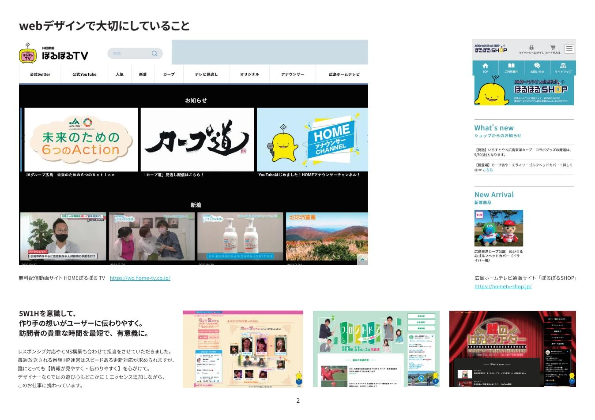
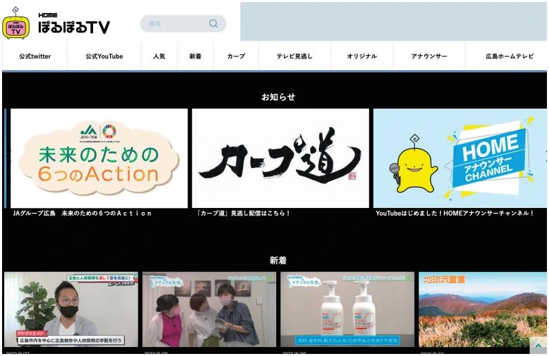
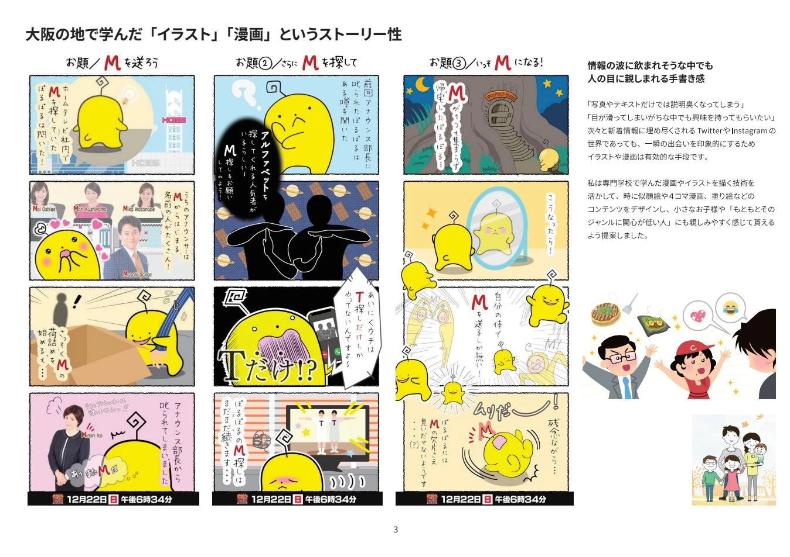
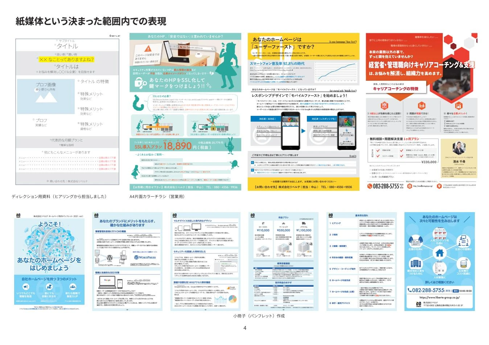
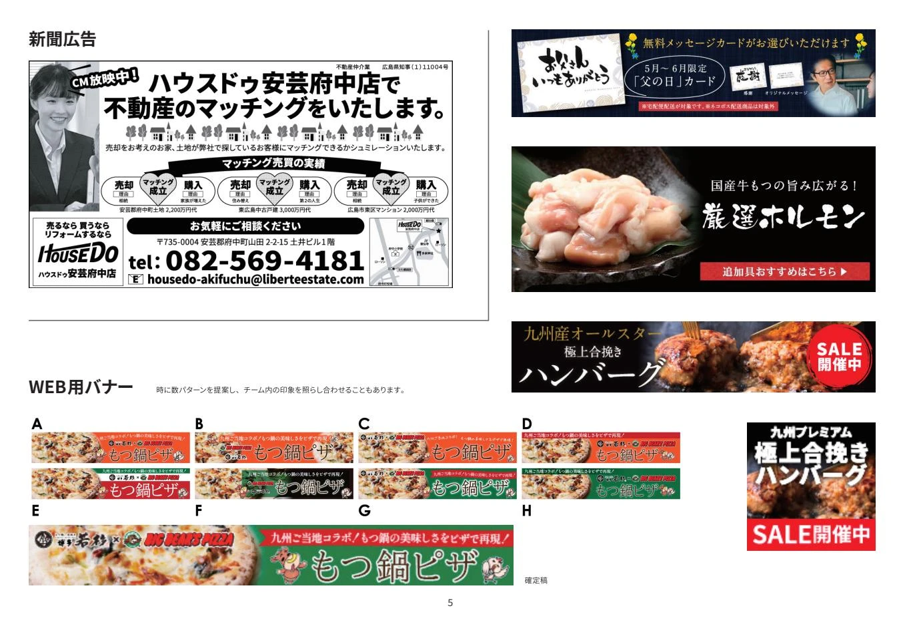
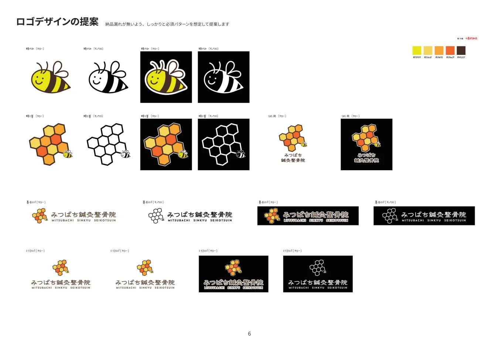
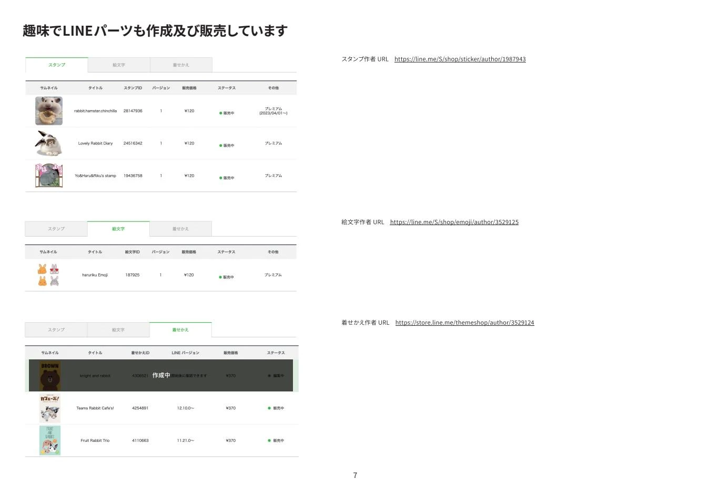

画像を拡大 ↗情報を見つけやすく。
番組・動画配信・ECサイト
番組やイベントと連動するWebコンテンツの制作・運営。レスポンシブ対応やCMS構築を通じて、情報の見やすさと更新のしやすさを考えています。
Webデザイン / HTML・CSS / CMS / 運用
WEB / GRAPHIC / ILLUSTRATION
デザインをつくる。日々の運用を支える。
使う人の声を聞きながら、伝わるかたちを考えます。

01 / SELECTED WORKS
Web・紙媒体・イラスト。
目的と媒体に合わせた表現。

画像を拡大 ↗番組やイベントと連動するWebコンテンツの制作・運営。レスポンシブ対応やCMS構築を通じて、情報の見やすさと更新のしやすさを考えています。
Webデザイン / HTML・CSS / CMS / 運用

画像を拡大 ↗専門学校で学んだイラストと漫画の表現を活かし、キャラクターやストーリーを通して情報を伝える制作に取り組んできました。
イラスト / 漫画

画像を拡大 ↗紙面のサイズや読む順序を意識した情報整理。Webと紙媒体の両方から、サービスやイベントの魅力を伝えます。
紙媒体 / レイアウト

画像を拡大 ↗食品をはじめとする商品の販促バナーや新聞広告の制作。媒体ごとの見え方に合わせて、写真と文字のバランスを整えています。
広告 / バナー / 販促

画像を拡大 ↗モチーフや配色、文字の組み合わせを検討したロゴ提案。複数の展開を比較しながら、ブランドの表情を探っています。
ロゴ / 配色 / バリエーション

画像を拡大 ↗個人制作としてLINE向けパーツの制作・販売にも取り組んできました。仕事とともに、自分の表現を育てる制作活動です。
自主制作 / LINE
02 / ABOUT
販売の現場からWebデザインへ。
制作と運用の両方を経験してきました。
2009年からWeb制作に携わり、ECサイトやコーポレートサイト、番組・イベントのWebコンテンツなどを手がけてきました。デザインだけでなく、コーディング、CMS構築、公開後の更新まで幅広く経験しています。
お客様の声に直接応えるサポートの経験も、制作の大切な視点のひとつ。相手の背景や目的を理解し、長く使いやすいデザインを目指しています。
03 / EXPERIENCE & SKILLS
顧客サイトの更新、デザインリニューアル、CMS構築、商品ページや販促物の制作。
ホームテレビ映像株式会社で、Webコンテンツや紙媒体の制作・運営、動画配信サイト等の立ち上げに参加。
株式会社heliosで、顧客対応、代理更新、メール設定のサポート、ホームページ制作を担当。
DESIGN
Photoshop / Illustrator
Adobe XD / Sketch
DEVELOPMENT
HTML / CSS / JavaScript
jQuery / WordPress / Movable Type
EC & SUPPORT
EC-CUBE / 楽天市場
Yahoo!ショッピング / 顧客サポート